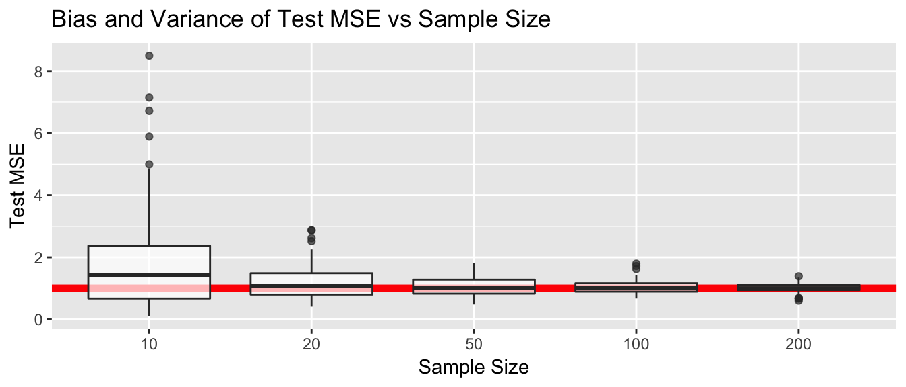
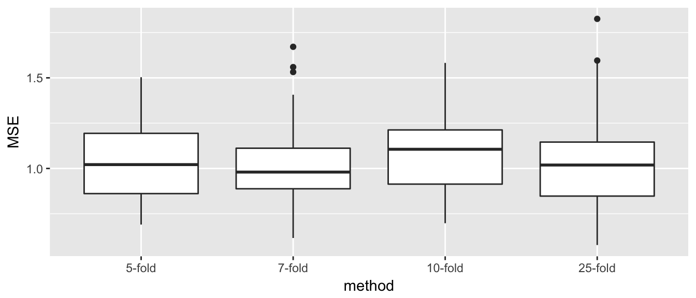
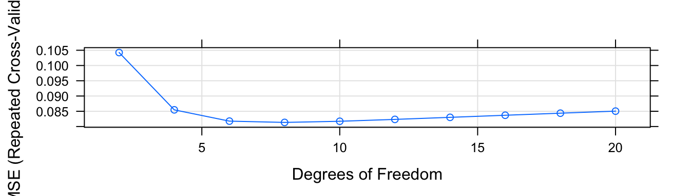
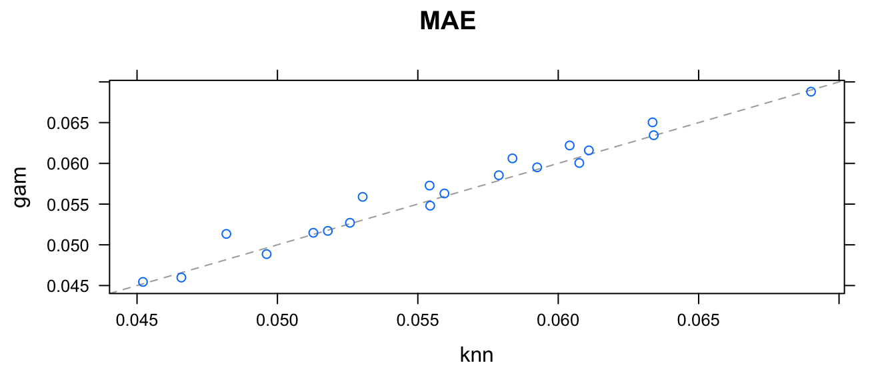
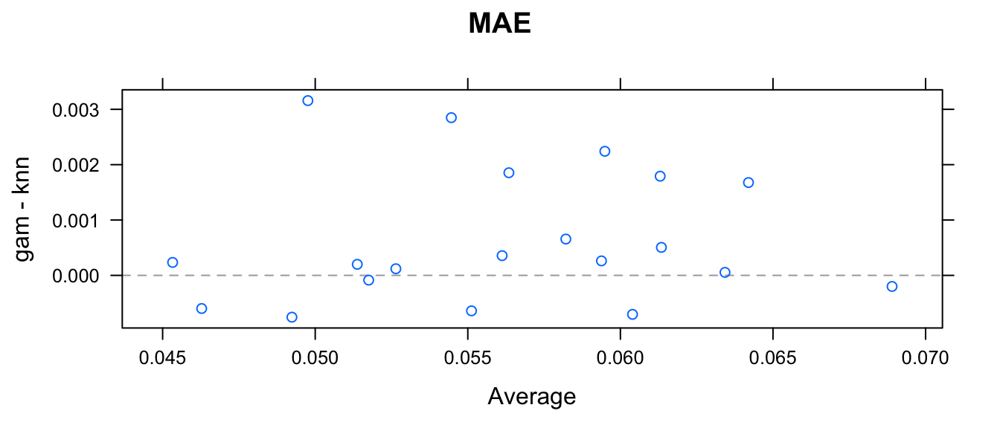

Chapter 5 Resampling Methods
Resampling methods are an important tool in modern statistics. They are applicable in a wide range of situations and require minimal theoretical advances to be useful in new situations. However, these methods require a large amount of computing effort and care must be taken to avoid excessive calculation.
The main idea for these methods is that we will repeatedly draw samples from the training set and fit a model on each sample. From each model we will extract a statistic of interest and then examine the distribution of the statistic across the simulated samples.
We will primarily discuss cross-validation and bootstrapping in this chapter. I think of cross-validation as a model selection and assessment tool while bootstrap is an inferential tool for creating confidence intervals.
5.1 Cross-validation
library(caret) # train/predict interface to gam
library(gam) # for my spline stuff
library(boot)
library(car)
library(STA578) # For multiplot()
library(ggplot2)
library(dplyr)
library(stringr) # string manipulation stuff
library(ggfortify) # autoplot on lm objectsWe are primarily interested in considering models of the form \[y = f(x) + \epsilon\] and we wish to estimate \(f\) with \(\hat{f}\) and we also wish to understand \(Var(\epsilon)\). We decided a good approach would be to split our observed data into test/training sets and then using the training set to produce \(\hat{f}\) and use it to predict values in the test set \(\hat{y_i} = \hat{f}(x_i)\) and then use \[MSE = \frac{1}{n_{test}}\sum_{i=1}^{n_{test}} (y_i - \hat{y}_i)^2\] as an estimate for \(Var(\epsilon)\).
Once we have estimated the function \(f()\) with some method, we wish to evaluate how well the model predicts the observed data, and how well it is likely to predict new data. We have looked at the bias/variance relationship of the prediction error for a new observations, \((x_0, y_0)\) as \[E\left[ (y_0 - \hat{f}(x_0))^2 \right] = Var( \hat{f} ) + \left[ Bias(\hat{f}) \right]^2 + Var(\epsilon)\] where
- \(Var(\hat{f})\) is how much our estimated function will vary if we had a completely new set of data.
- \(Bias(\hat{f})\) is how much our estimated function differs from the true \(f\).
Notice that all the terms on my right hand side of this equation are positive so using the test set MSE will tend to overestimate \(Var(\epsilon)\). In other words, test set MSE is a biased estimate of \(Var(\epsilon)\). For a particular set of data the test MSE is calculated using only a single instance of \(\hat{f}\) and so averaging across test observations won’t fix the fact that \(\hat{f} \ne f\). Only by repeated fitting \(\hat{f}\) on different sets of data could the bias term be knocked out of the test MSE. However as our sample size increase, this overestimation will decrease because the bias will decrease because \(\hat{f}\) will be closer to \(f\) and the variance of \(f\) will also be less.
Lets do a simulation study to show this is true. We will generate data from a simple linear regression model, split the data equally into training and testing sets, and then use the test MSE as an estimate of \(Var(\epsilon)\). As we look at test set MSE as an estimator for the \(Var(\epsilon)\), should look for what values of \(n\) tend to have an unbiased estimate of \(\sigma=1\) and also have the smallest variance. Confusingly we are interested in the variance of the variance estimator, but that is why this is a graduate course.
# what will a simulated set of data look like, along with a simple regression
# Red line = True f(x)
n <- 10
sigma <- 1 # variance is also 1
data <- data.frame( x= seq(0,10) ) %>%
mutate( y = 2 + .75*x + rnorm(n, sd=sigma) )## Warning in 2 + 0.75 * x + rnorm(n, sd = sigma): longer object length is not
## a multiple of shorter object lengthggplot(data, aes(x=x, y=y) ) +
geom_abline(slope=.75, intercept = 2, color='red', size=2) +
geom_point() +
geom_smooth(method='lm')Now to do these simulations.
M <- 100 # do 100 simulations for each sample size n
results <- NULL
for( n in c(10, 20, 50, 100, 200)){
for(i in 1:M){
data <- data.frame( x= seq(0,10, length.out = n) ) %>%
mutate( y = 2 + .75*x + rnorm(n, sd=sigma) )
train <- data %>% sample_frac(.5)
test <- setdiff(data, train)
model <- train( y ~ x, data=train, method='lm')
test$yhat <- predict(model, newdata=test)
output <- data.frame(n=n, rep=i, MSE = mean( (test$y - test$yhat)^2 ))
results <- rbind(results, output)
}
}
save(results, file="Simulations/OverEstimation.RData")# plot the results
load('Simulations/OverEstimation.RData')
ggplot(results, aes(x=factor(n), y=MSE)) +
geom_abline(intercept = 1, slope=0, color='red', size=2) +
geom_boxplot(alpha=.7) +
labs(y='Test MSE', x='Sample Size', title='Bias and Variance of Test MSE vs Sample Size')
As we discussed earlier from a theoretical perspective, test MSE tends to overestimate \(Var(\epsilon)\) but does better with a larger sample size. Similarly the variance of test MSE also tends to get smaller with larger sample sizes.
We now turn our focus to examining several different ways we could use the train/test paradigm to estimate \(Var(\epsilon)\). For each method, we will again generate data from a simple regression model and then fit a linear model and therefore we shouldn’t have any mis-specification error and we can focus on which procedure produces the least biased and minimum variance estimate of \(Var(\epsilon)\). For each simulation we will create \(M=100\) datasets and examine the resulting MSE values.
# Simulation parameters
M <- 100 # number of idependent simulations per method
n <- 50 # Sample size per simulation
sigma <- 1 # var(epsilon) = stddev(epsilon)
results <- NULL5.1.1 Validation Sets Approach
This is the approach that we just pursued. In the validation sets approach, we: 1. Randomly split the data into training and test sets, where the proportion \(p\) is assigned to the training set. 2. Fit a model to the training set 3. Use the model to predict values in the test set 4. MSE = mean squared error of values in the test set: \[MSE = \frac{1}{n_{test}} \sum (y_i - \hat{y}_i)^2\]
ValidationSets_results <- NULL
M <- 100
for(j in 1:M){
for( p in c(.5, .7, .8, .9, .94, .98) ){
data <- data.frame( x= seq(0,10, length.out = n) ) %>%
mutate( y = 2 + .75*x + rnorm(n, sd=sigma) )
train <- data %>% sample_frac(p)
test <- setdiff(data, train)
model <- train( y ~ x, data=train, method='lm')
test$yhat <- predict(model, newdata=test)
output <- data.frame(p=p, rep=j, MSE = mean( (test$y - test$yhat)^2 ))
ValidationSets_results <- rbind(ValidationSets_results, output)
}
}
save(ValidationSets_results, file='Simulations/LinearModel_ValidationSets.RData')load('Simulations/LinearModel_ValidationSets.RData')
ggplot(ValidationSets_results, aes(x=factor(p), y=MSE)) + geom_boxplot()ValidationSets_results %>%
group_by(p) %>%
summarise(mean_MSE = mean(MSE))## # A tibble: 6 x 2
## p mean_MSE
## <dbl> <dbl>
## 1 0.50 1.1148614
## 2 0.70 1.0405579
## 3 0.80 1.0196439
## 4 0.90 0.9923938
## 5 0.94 1.0421772
## 6 0.98 1.1326722When we train our model on more data, we see smaller MSE values to a point, but in the extreme (where we train on 98% and test on 2%, where in this case it is train on 49 observations and test on 1) we have much higher variability. If we were take the mean of all \(M=100\) simulations, we would see that the average MSE is near 1 for each of these proportions. So the best looking options are holding out 20 to 50%.
5.1.2 Leave one out Cross Validation (LOOCV).
Instead of randomly selecting one observation to be the test observation, LOOCV has each observation take a turn at being left out, the we average together all the predicted squared errors.
LOOCV_results <- NULL
M <- 100
for(j in 1:M){
data <- data.frame( x= seq(0,10, length.out = n) ) %>%
mutate( y = 2 + .75*x + rnorm(n, sd=sigma) )
for( i in 1:n ){
train <- data[ -i, ]
test <- data[ i, ]
model <- train( y ~ x, data=train, method='lm')
data[i,'yhat'] <- predict(model, newdata=test)
}
output <- data.frame(rep=j, MSE = mean( (data$y - data$yhat)^2 ))
LOOCV_results <- rbind(LOOCV_results, output)
}
save(ValidationSets_results, file='Simulations/LinearModel_LOOCV.RData')# load('Simulations/LinearModel_LOOCV.RData')
# Total_Results <- rbind(
# ValidationSets_results %>% mutate(method=str_c('VS_',p)) %>% dplyr::select(MSE,method),
# LOOCV_results %>% mutate(method='LOOCV') %>% dplyr::select(MSE, method)) %>%
# filter(is.element(method, c('VS_0.5', 'VS_0.7', 'VS_0.8')))
# ggplot(Total_Results, aes(x=method, y=MSE)) + geom_boxplot()This was extremely painful to perform because there were so many model fits. If we had a larger \(n\) it would be computationally prohibative. In general, we ignore LOOCV because of the computational intensity. By taking each observation out in turn, we reduced the high variability that we saw in the validation sets method with \(p=0.98\).
5.1.3 K-fold cross validation
A computational compromise between LOOCV and validation sets is K-fold cross validation. Here we randomly assign each observation to one of \(K\) groups. In turn, we remove a group, fit the model on the rest of the data, then make predict for the removed group. Finally the MSE is the average prediction error for all observations.
KfoldCV_results <- NULL
M <- 100
for(j in 1:M){
for( K in c(5, 7, 10, 25) ){
data <- data.frame( x= seq(0,10, length.out = n) ) %>%
mutate( y = 2 + .75*x + rnorm(n, sd=sigma) ) %>%
mutate(fold = sample( rep(1:K, times=ceiling(n/K))[1:n] ) )
for( k in 1:K ){
index <- which( data$fold == k )
train <- data[ -index, ]
test <- data[ index, ]
model <- train( y ~ x, data=train, method='lm')
data[index,'yhat'] <- predict(model, newdata=test)
}
output <- data.frame(R=1, K=K, MSE = mean( (data$y - data$yhat)^2 ))
KfoldCV_results <- rbind(KfoldCV_results, output)
}
}
save(KfoldCV_results, file='Simulations/LinearModel_KfoldCV.RData')load('Simulations/LinearModel_KfoldCV.RData')
Total_Results <- NULL
Total_Results <- rbind(
Total_Results,
KfoldCV_results %>% mutate(method=str_c(K,'-fold')) %>% dplyr::select(MSE, method) %>%
mutate(method=factor(method, levels=c('5-fold','7-fold','10-fold','25-fold'))))
ggplot(Total_Results, aes(x=method, y=MSE)) + geom_boxplot()
This looks really good for K-fold cross validation. By still having quite a lot of data in the training set, the estimates have relatively low bias (undetectable really for \(n=50\)), and the variability of the estimator is much smaller due to averaging across several folds. However, we do see that as the number of folds increases, and thus the number of elements in each test set gets small, the variance increases.
5.1.4 Repeated K-fold cross validation
By averaging across folds we reduce variability, but we still want the size of the test group to be large enough. So we could repeatedly perform K-fold cross validation and calculate the MSE by averaging across all the repeated folds.
R_x_KfoldCV_results <- NULL
M <- 100
for(j in 1:M){
for( R in c(2,4,6,8) ){
for( K in c(5, 7, 10, 25) ){
data <- data.frame( x= seq(0,10, length.out = n) ) %>%
mutate( y = 2 + .75*x + rnorm(n, sd=sigma) ) %>%
mutate(fold = sample( rep(1:K, times=ceiling(n/K))[1:n] ) )
Sim_J_Result <- NULL
for( r in 1:R ){
for( k in 1:K ){
index <- which( data$fold == k )
train <- data[ -index, ]
test <- data[ index, ]
model <- train( y ~ x, data=train, method='lm')
test$yhat <- predict(model, newdata=test)
Sim_J_Result <- data.frame( MSE = mean( (test$y - test$yhat)^2 ) )
}
}
output <- data.frame(R=R, K=K, MSE = mean( Sim_J_Result$MSE ))
R_x_KfoldCV_results <- rbind(R_x_KfoldCV_results, output)
}
}
}
save(R_x_KfoldCV_results, 'Simulations/LinearModel_R_x_KfoldCV.RData')# load('Simulations/LinearModel_R_x_KfoldCV.RData')
# All_R_x_KfoldCV_results <- cbind(KfoldCV_results, R_x_KfoldCV_results)
# ggplot(All_R_x_KfoldCV_results, aes(x=method, y=MSE)) + geom_boxplot() +
# facet_grid( .~R)Repeated was ok??? Need these actual results.
5.1.5 Using cross validation to select a tuning parameter
First we’ll load some data to work with from the library ‘SemiPar’
data('lidar', package='SemiPar')
ggplot(lidar, aes(x=range, y=logratio)) +
geom_point()We’ll fit this data using a Regression Spline (see chapter 7), but all we need for now is that there is a flexibility parameter that is related to how smooth the function is.
df <- c(2,4,10,30)
P <- list()
for( i in 1:length(df) ){
model <- train(logratio ~ range, data=lidar,
method='gamSpline', tuneGrid=data.frame(df=df[i]) )
lidar$fit <- predict(model)
P[[i]] <- ggplot(lidar, aes(x=range)) +
geom_point(aes(y=logratio)) +
geom_line(aes(y=fit), color='red', size=2) +
ggtitle(paste('Df = ', df[i]))
} STA578::multiplot(P[[1]], P[[2]], P[[3]], P[[4]], ncol=2)
Looking at these graphs, it seems apparent that having df=6 to 8 is approximately correct. Lets see what model is best using cross validation. Furthermore, we will use the package caret to do this instead of coding all of this by hand.
The primary way to interact with caret is through the train() function and we notice that until now, we’ve always passed a single value into the tuneGrid parameter. By passing multiple values, we create a set of tuning parameters to select from using cross validation. We will control the manner in which we perform the cross validation using the trControl parameter.
The output of the train function has two important elements, results, which is the RMSE for each row in the tuneGrid and bestTune which gives the row with the smallest RMSE.
# Repeated 4x5-fold Cross Validation
ctrl <- trainControl( method='repeatedcv', number=5, repeats=4 )
grid <- data.frame( df = seq(2, 20, by=2 ) )
rkfold_output <- NULL
for( s in 1:10 ){
model <- train(logratio ~ range, data=lidar, method='gamSpline',
trControl = ctrl, tuneGrid=grid )
results <- model$results %>%
dplyr::select(df, RMSE) %>%
mutate( method='Repeated K-fold CV', set=s )
rkfold_output <- rbind( rkfold_output, results )
}Finally we can make a graph showing the output of each.
ggplot(rkfold_output, aes(x=df, y=RMSE, color=factor(set))) +
geom_line() + geom_point() +
facet_wrap( ~ method )
Clearly each of the s=10 runs chose df=8 to be the best choice and so we didn’t need to run all 10.
model$results## df RMSE Rsquared RMSESD RsquaredSD
## 1 2 0.10363506 0.8724301 0.01624953 0.03299853
## 2 4 0.08505054 0.9139498 0.01460184 0.02343442
## 3 6 0.08158012 0.9208304 0.01375390 0.02036788
## 4 8 0.08124921 0.9214408 0.01400183 0.02085398
## 5 10 0.08169853 0.9205019 0.01444001 0.02209282
## 6 12 0.08240708 0.9190300 0.01486526 0.02335739
## 7 14 0.08319638 0.9173782 0.01523275 0.02446598
## 8 16 0.08399510 0.9156904 0.01554064 0.02541390
## 9 18 0.08477183 0.9140308 0.01579981 0.02624270
## 10 20 0.08551222 0.9124295 0.01602400 0.02699647plot(model)
5.1.6 Comparing two analysis techniques
Finally we will compare different analysis techniques again using cross validation. We will fit the ‘lidar’ data using either the gamSplines or using knn.
# Repeated 4x5-fold Cross Validation
ctrl <- trainControl( method='repeatedcv', repeats=4, number=5)
set.seed(8675309) # same fold assignment!
Spline <- train(logratio ~ range, data=lidar, trControl = ctrl,
method='gamSpline', tuneGrid=data.frame(df=seq(2,20,by=2)) )
set.seed(8675309) # same fold assignments!
knn <- train(logratio ~ range, data=lidar, trControl = ctrl,
method='knn', tuneGrid=data.frame(k=seq(5,80,by=5)))lidar$yhat <- predict(Spline)
P1 <- ggplot(lidar, aes(x=range, y=logratio)) +
geom_point( aes(y=logratio) ) +
geom_line( aes(y=yhat), color='red', size=2 ) +
labs( title = str_c('GAM: df=', Spline$bestTune$df) )
lidar$yhat <- predict(knn)
P2 <- ggplot(lidar, aes(x=range, y=logratio)) +
geom_point( aes(y=logratio) ) +
geom_line( aes(y=yhat), color='red', size=2 ) +
labs( title = str_c('knn: k=', knn$bestTune$k) )
STA578::multiplot(P1, P2)Both of these techniques fit the observed data quite well, though I worry that some of the wiggliness in KNN for large range values is overfitting the noise.
We would like to see if the folds where knn had problems are the same as the folds where gamSpline had issues. Fortunately caret allows us to investigate the RMSE for each of the \(20\) folds and compare how well knn did compared to gamSpline.
resamps <- resamples(list(gam=Spline, knn=knn))
summary(resamps)##
## Call:
## summary.resamples(object = resamps)
##
## Models: gam, knn
## Number of resamples: 20
##
## RMSE
## Min. 1st Qu. Median Mean 3rd Qu. Max. NA's
## gam 0.06303 0.07368 0.07837 0.07957 0.08591 0.09569 0
## knn 0.06152 0.07314 0.07801 0.07884 0.08567 0.09475 0
##
## Rsquared
## Min. 1st Qu. Median Mean 3rd Qu. Max. NA's
## gam 0.8826 0.9127 0.9250 0.9222 0.9355 0.9453 0
## knn 0.8839 0.9138 0.9277 0.9242 0.9362 0.9493 0xyplot(resamps)
xyplot(resamps, what='BlandAltman')
We could ask if the average difference could be equal to zero? With these twenty differences, we could just perform a t-test to make that comparison to see if the gam model typically has a greater difference in RMSE.
diff(resamps) %>% summary()##
## Call:
## summary.diff.resamples(object = .)
##
## p-value adjustment: bonferroni
## Upper diagonal: estimates of the difference
## Lower diagonal: p-value for H0: difference = 0
##
## RMSE
## gam knn
## gam 0.0007326
## knn 0.002217
##
## Rsquared
## gam knn
## gam -0.001935
## knn 0.0003233These two matricies give the point estimate of the difference in RMSE (gam - knn) as showing that there is weak evidence that knn predicts has a lower RMSE (difference = 0.0007326; p = 0.002217). Similarly we have weak evidence that the knn has a higher R-squared (difference = -0.001935; p = 0.0003233).
While these might be statistically significant, the practical difference of is pretty small, considering the y-values are spread across about 1-unit vertically, so the difference is about \(1/10\) of 1%. In this case, the two methods give practically identical inference.
5.2 Bootstrapping
The basic goal of statistics is that we are interested in some population (which is described by some parameter \(\mu,\delta,\tau,\beta\), or generally, \(\theta\)) and we take a random sample of size \(n\) from the population of interest and we truly believe that the sample is representative of the population of interest. Then we use some statistic of the data \(\hat{\theta}\) as an estimate \(\theta\). However we know that this estimates, \(\hat{\theta}\), vary from sample to sample. Previously we’ve used that the Central Limit Theorem gives \[\hat{\theta}\stackrel{\cdot}{\sim}N\left(\theta,\,\sigma_{\hat{\theta}}\right)\] to construct confidence intervals and perform hypothesis tests, but we don’t necessarily like this approximation. If we could somehow take repeated samples (call these repeated samples \(\mathbb{Y}_{j}\) for \(j\in1,2,\dots,M\)) from the population we would understand the distribution of \(\hat{\theta}\) by just examining the distribution of many observed values of \(\hat{\theta}_{j}\) where \(\hat{\theta}_{j}\) is the statistic calculated from the ith sample data \(\mathbb{Y}_{j}\).
However, for practical reasons, we can’t just take 1000s of samples of size n from the population. However, because we truly believe that \(\mathbb{Y}\) is representative of the entire population, then our best guess of what the population is just many repeated copies of our data.
Suppose we were to sample from a population of shapes, and we observed 4/9 of the sample were squares, 3/9 were circles, and a triangle and a diamond. Then our best guess of what the population that we sampled from was a population with 4/9 squares, 3/9 circles, and 1/9 of triangles and diamonds.
Using this approximated population (which is just many many copies of our sample data), we can take many samples of size \(n\). We denote these bootstrap samples as \(\mathbb{Y}_{j}^{*}\), where the star denotes that the sample was taken from the approximate population, not the actual population. From each bootstrap sample \(\mathbb{Y}_{j}^{*}\) a statistic of interest can be taken \(\hat{\theta}_{j}^{*}\).
Because our approximate population is just an infinite number of copies of our sample data, then sampling from the approximate population is equivalent to sampling with replacement from our sample data. If I take \(n\) samples from \(n\) distinct objects with replacement, then the process can be thought of as mixing the \(n\) objects in a bowl and taking an object at random, noting which it is, replace it into the bowl, and then draw the next sample. Practically, this means some objects will be selected more than once and some will not be chosen at all. To sample our observed data with replacement, we’ll use the resample() function in the mosaic package. We see that some rows will be selected multiple times, and some will not be selected at all.
5.2.1 Observational Studies vs Designed Experiments
The process of collecting data is a time consuming and laborious process but is critical to our understanding of the world. The fundamental goal is to collect a sample of dat that is representative of the population of interest and can provide insight into the scientific question at hand. There are two primary classes about how this data could be gathered, observational studies and designed experiments.
In an observational study, a population is identified and a random sample of individuals are selected to be in the sample. Then each subject in the sample has explanatory and response variables measured (fish are weighed and length recorded, people asked their age, gender, occupation etc). The critical part of this data collection method is that the random selection from the population is done in a fashion so that each individual in the population could potentially be in the sample and there is no systematic exclusion of certain parts of the population.
Simple Random Samples - Suppose that we could generate a list of every individual in the population and then we were to randomly select n of those to be our sample. Then each individual would have an equal chance to be in the sample and this selection scheme should result in sample data that is representative of the population of interest. Often though, it is difficult to generate a list of every individual, but other proxies might work. For example if we wanted to understand cougar behavior in the Grand Canyon, we might divide the park up into 100 regions and then random select 20 of those regions to sample and observe whatever cougar(s) are in that region.
Stratified Random Samples - In a stratified random sample, the population can be broken up into different strata and we perform a simple random sample within each strata. For example when sampling lake fish, we might think about the lake having deep and shallow/shore water strata and perhaps our sampling technique is different for those two strata (electro-fishing on shore and trawling in the deep sections). For human populations, we might stratify on age and geographic location (older retired people will answer the phone more readily than younger people). For each of the strata, we often have population level information about the different strata (proportion of the lake that is deep water versus shallow, or proportion of the population 20-29, 30-39, etc. and sample each strata accordingly (e.g. if shallow water is 40% of the fish habitat, then 40% of our sampling effort is spent in the shallows).
Regardless of sample type, the key idea behind an observational study is that we don’t apply a treatment to the subject and then observe a response. While we might annoy animal or person, we don’t do any long-term manipulations. Instead the individuals are randomly selected and then observed, and it is the random selection from the population that results in a sample that is representative of the population.
Designed Experiments - In an experimental setting, the subjects are taken from the population (usually not at random but rather by convenience) and then subjected to some treatments and we observe the individuals response to the treatment. There will usually be several levels of the treatment and there often is a control level. For example, we might want to understand how to maximize the growth of a type of fungus for a pharmaceutical application and we consider applying different nutrients to the substrate (nothing, +phosphorus, +nitrogen, +both). Another example is researchers looking at the efficacy of smoking cessation methods and taking a set of willing subjects and having them try different methods (no help, nicotine patches, nicotine patches and a support group). There might be other covariates that we expect might affect the success rate (individuals age, length of time smoking, gender) and we might make sure that our study include people in each of these groups (we call these blocks in the experimental design terminology, but they are equivalent to the strata in the observational study terminology). Because even within blocks, we expect variability in the success rates due to natural variation, we randomize the treatment assignment to the individual and it is this randomization that addresses any unrecognized lurking variables that also affect the response.
A designed experiment is vastly superior to an observational experiment because the randomization of the treatment accounts for variables that the researcher might not even suspect to be important. A nice example of the difference between observational studies and experiments is a set of studies done relating breast cancer and hormone replacement therapy (HRT) drugs used by post-menopausal women. Initial observational studies that looked at the rates of breast cancer showed that women taking HRT had lower rates of breast cancer. When these results were first published, physicians happily recommended HRT to manage menopause symptoms and to decrease risk of breast cancer. Unfortunately subsequent observational studies showed a weaker effect and among some populations there was an increase in breast cancer. To answer the question clearly, a massive designed experiment was undertaken where women would be randomly assigned either a placebo or the actual HRT drugs. This study conclusively showed that HRT drugs increased the risk of breast cancer.
Why was there a disconnect between the original observational studies and the experiment? The explanation given is that there was a lurking variable that the observational studies did not control for… socio-economic class. There are many drivers of breast cancer and some of them are strongly correlated with socio-economic class such as where you live (in a polluted area or not). Furthermore because HRT was initially only to relieve symptoms of menopause, it wasn’t “medically necessary” and insurance didn’t cover it and so mainly wealthy women (with already lower risk for breast cancer) took the HRT drugs and the simple association between lower breast cancer risk and HRT was actually the effect of socio-economic status. By randomly assigning women to the placebo and HRT groups, high socio-economic women ended up in both groups. So even if there was some other lurking variable that the researchers didn’t consider, the randomization would cause the unknown variable to be evenly distributed in the placebo and HRT groups.
Because the method of randomization is so different between observational studies and designed experiments, we should make certain that our method of creating bootstrap data sets respects that difference in randomization. So if there was some constraint on the data when it was originally taken, we want the bootstrap datasets to obey that same constraint. If our study protocol was to collect a sample of \(n_{1}=10\) men and \(n_{2}=10\) women, then we want our bootstrap samples to have \(10\) men and \(10\) women. If we designed an experiment with \(25\) subjects to test the efficacy of a drug and chose to administer doses of \(5, 10, 20, 40,\) and \(80\) mg with each five subjects for each dose level, then we want those same dose levels to show up in the bootstrap datasets.
There are two common approaches, case resampling and residual resampling. In case resampling, we consider the data \(\left(x_{i,}y_{i}\right)\) pairs as one unit and when creating a bootstrap sample, we resample those pairs, but if the \(i\)th data point is included in the bootstrap sample, then it is included as the \(\left(x_{i,}y_{i}\right)\) pair. In contrast, residual resampling is done by first fitting a model to the data, finding the residual values, resampling those residuals and then adding those bootstrap residuals to the predicted values \(\hat{y}_{i}\).
Testing.Data <- data.frame(
x = c(3,5,7,9),
y = c(3,7,7,11))
Testing.Data## x y
## 1 3 3
## 2 5 7
## 3 7 7
## 4 9 11# Case resampling
Boot.Data <- mosaic::resample(Testing.Data)
Boot.Data## x y orig.id
## 1 3 3 1
## 4 9 11 4
## 2 5 7 2
## 2.1 5 7 2Notice that we’ve sampled \(\left\{ x=5,y=7\right\}\) twice and did not get the \(\left\{ 7,7\right\}\) data point.
Residual sampling is done by resampling the residuals and calling them \(\hat{\epsilon}^{*}\) and then the new y-values will be \(y_{i}^{*}=\hat{y}_{i}+\hat{\epsilon}_{i}^{*}\)
# Residual resampling
model <- lm( y ~ x, data=Testing.Data)
Boot.Data <- Testing.Data %>%
mutate( fit = fitted(model),
resid = resid(model),
resid.star = mosaic::resample(resid),
y.star = fit + resid.star )
Boot.Data## x y fit resid resid.star y.star
## 1 3 3 3.4 -0.4 -1.2 2.2
## 2 5 7 5.8 1.2 -1.2 4.6
## 3 7 7 8.2 -1.2 -0.4 7.8
## 4 9 11 10.6 0.4 1.2 11.8Notice that the residuals resampling results in a data set where each of the x-values is retained, but a new y-value (possibly not seen in the original data) is created from the predicted value \(\hat{y}\) and a randomly selected residual.
In general when we design an experiment, we choose which x-values we want to look at and so the bootstrap data should have those same x-values we chose. So for a designed experiment, we typically will create bootstrap data sets via residual resampling. For observational studies, we’ll create the bootstrap data sets via case resampling. In both cases if there is a blocking or strata variable to consider, we will want to do the resampling within the block/strata.
5.2.2 Confidence Interval Types
We want to understand the relationship between the sample statistic \(\hat{\theta}\) to the population parameter \(\theta\). We create an estimated population using many repeated copies of our data. By examining how the simulated \(\hat{\theta}^{*}\) vary relative to \(\hat{\theta}\), we will understand how possible \(\hat{\theta}\) values vary relative to \(\theta\).
We will outline several methods for producing confidence intervals (in the order of most assumptions to fewest). For each of these methods, we will be interested in creating a \(1-2\alpha\) confidence interval, so in all the formulas presented here, consider \(\alpha\) to be the amount of probability in either tail and for a \(95\%\) CI, we will use \(\alpha=0.025\).
5.2.2.1 Normal intervals
This confidence interval assumes the sampling distribution of \(\hat{\theta}\) is approximately normal (which is often true due to the central limit theorem). We can use the bootstrap replicate samples to get an estimate of the standard error of the statistic of interest by just calculating the sample standard deviation of the replicated statistics.
Let \(\theta\) be the statistic of interest and \(\hat{\theta}\) be the value of that statistic calculated from the observed data. Define \(\hat{SE}^{*}\) as the sample standard deviation of the \(\hat{\theta}^{*}\) values.
Our first guess as to a \((1-2\alpha)*100\%\) confidence interval is \[\hat{\theta}\pm z_{1-\alpha}\hat{SE}^{*}\] which we could write as \[\left[\hat{\theta}-z_{1-\alpha}\hat{SE}^{*},\;\;\;\hat{\theta}+z_{1-\alpha}\hat{SE}^{*}\right]\]
5.2.2.2 Percentile intervals
The percentile interval doesn’t assume normality but it does assume that the bootstrap distribution is symmetric and unbiased for the population value. This is the method we used to calculate confidences intervals in the first several chapters. It is perhaps the easiest to calculate and understand. This method only uses \(\hat{\theta}^{*}\), and, for a \((1-2\alpha)*100\%\) confidence interval is: \[\left[\hat{\theta}_{\alpha}^{*}\;,\;\;\hat{\theta}_{1-\alpha}^{*}\right]\]
5.2.2.3 Basic intervals
Unlike the percentile bootstrap interval, the basic interval does not assume the bootstrap distribution is symmetric but does assume that \(\hat{\theta}\) is an unbiased estimate for \(\theta\).
To address this, we will using the observed distribution of our replicates \(\hat{\theta}^{*}\). Let \(\hat{\theta}_{\alpha}^{*}\) and \(\hat{\theta}_{1-\alpha}^{*}\) be the \(\alpha\) and \(1-\alpha\) quantiles of the replicates \(\hat{\theta}^{*}\). Then another way to form a \((1-2\alpha)*100\%\) confidence interval would be \[\left[\hat{\theta}-\left(\hat{\theta}_{1-\alpha}^{*}-\hat{\theta}\right),\;\;\;\;\hat{\theta}-\left(\hat{\theta}_{\alpha}^{*}-\hat{\theta}\right)\right]\] where the minus sign on the upper limit is because \(\left(\hat{\theta}_{\alpha}^{*}-\hat{\theta}\right)\) is already negative. The idea behind this interval is that the sampling variability of \(\hat{\theta}\) from \(\theta\) is the same as the sampling variability of the replicates \(\hat{\theta}^{*}\) from \(\hat{\theta}\), and that the distribution of \(\hat{\theta}\) is possibly skewed, so we can’t add/subtract the same amounts. Suppose we observe the distribution of \(\hat{\theta}^{*}\) as
Then any particular value of \(\hat{\theta}^{*}\) could be much larger than \(\hat{\theta}\). Therefore \(\hat{\theta}\) could be much larger than \(\theta\). Therefore our confidence interval should be \(\left[\hat{\theta}-\textrm{big},\;\hat{\theta}+\textrm{small}\right]\).
This formula can be simplified to
\[\left[\hat{\theta}-\left(\hat{\theta}_{1-\alpha/2}^{*}-\hat{\theta}\right)\;,\,\hat{\theta}+\left(\hat{\theta}-\hat{\theta}_{\alpha/2}^{*}\right)\right] =
\left[2\hat{\theta}-\hat{\theta}_{1-\alpha/2}^{*}\;,\;\;2\hat{\theta}-\hat{\theta}_{\alpha/2}^{*}\right]\]
5.2.2.4 Bias-corrected and accelerated intervals (BCa)
Different schemes for creating confidence intervals can get quite complicated. There is a thriving research community investigating different ways of creating intervals and which are better in what instances. The BCa interval is a variation of the percentile method and is the most general of the bootstrap intervals and makes the fewest assumptions. The \((1-2\alpha)*100\%\) confidence interval is give by \[\left[ \hat{\theta}^*_{\alpha_1}, \hat{\theta}^*_{\alpha_2} \right]\] where \[\begin{aligned} \alpha_1 &= \Phi\left( \hat{z}_0 + \frac{\hat{z}_0 + z_\alpha}{1-\hat{\alpha}(\hat{z}_0+z_\alpha)} \right) \\ \\ \alpha_2 &= \Phi\left( \hat{z}_0 + \frac{\hat{z}_0 + z_{1-\alpha}}{1-\hat{\alpha}(\hat{z}_0+z_{1-\alpha})} \right) \end{aligned}\] and \(\Phi(\cdot)\) is the standard normal cdf, and \(z_\alpha\) is the \(\alpha\) quantile of the standard normal distribution. If \(\hat{\alpha} = \hat{z}_0 = 0\), then these formulas reduce to \[\alpha_1 = \Phi(z_\alpha) = \alpha \;\;\;\;\; \textrm{and} \;\;\;\;\; \alpha_2 = \Phi(z_{1-\alpha}) = 1-\alpha\]
The bias correction term, \(\hat{z}_0\) is derived from the proportion of \(\hat{\theta}^*\) values that are less than the original \(\hat{\theta}\) \[\hat{z}_0 = \Phi^{-1} \left( \frac{ \sum I( \hat{\theta}^*_i < \hat{\theta} ) }{B} \right)\] where \(B\) is the number of bootstrap samples taken and \(I()\) is the indicator function that takes on the value of 1 if the comparison is true and 0 otherwise.
The acceleration term, \(\hat{\alpha}\), is calculated using the jackknife estimate of the statistic using the original data. Let \(\hat{\theta}_{(i)}\) be the statistic of interest calculated using all but the \(i\)th observation from the original data and define the jackknife estimate \(\hat{\theta}_{(\cdot)}\) as \[\hat{\theta}_{(\cdot)} = \frac{1}{n}\sum_{i=1}^N \hat{\theta}_{(i)}\]
and finally we can calculate \[\hat{a} = \frac{\sum_{i=1}^n \left( \hat{\theta}_{(\cdot)} - \hat{\theta}_{(i)} \right)^3}{6\left[ \sum_{i=1}^n \left( \hat{\theta}_{(\cdot)}-\hat{\theta}_{(i)} \right)^2\right]^{3/2}}\]
It is not at all obvious why \(\hat{a}\) is an appropriate term, but interested readers should consult chapter 14 of Efron and Tibshirani’s An Introduction to the Bootstrap.
5.2.3 Using car::Boot() function
For every model we’ve examined we can create simulated data sets using either case or residual resampling and produce confidence intervals for any of the parameters of interest. We won’t bother to do this by hand, but rather let R do the work for us. The package that contains most of the primary programs for bootstrapping is the package boot. The functions within this package are quite flexible but they are a little complex. While we will use this package directly later, for now we will use the package car which has a very convenient function car::Boot().
We return to our ANOVA example of hostility scores after three different treatment methods. The first thing we will do (as we should do in all data analyses) is to graph our data.
# define the data
Hostility <- data.frame(
HLT = c(96,79,91,85,83,91,82,87,
77,76,74,73,78,71,80,
66,73,69,66,77,73,71,70,74),
Method = c( rep('M1',8), rep('M2',7), rep('M3',9) ) )ggplot(Hostility, aes(x=Method, y=HLT)) +
geom_boxplot()We can fit the cell-means model and examine the summary statistics using the following code.
model <- lm( HLT ~ -1 + Method, data=Hostility )
summary(model)##
## Call:
## lm(formula = HLT ~ -1 + Method, data = Hostility)
##
## Residuals:
## Min 1Q Median 3Q Max
## -7.750 -2.866 0.125 2.571 9.250
##
## Coefficients:
## Estimate Std. Error t value Pr(>|t|)
## MethodM1 86.750 1.518 57.14 <2e-16 ***
## MethodM2 75.571 1.623 46.56 <2e-16 ***
## MethodM3 71.000 1.431 49.60 <2e-16 ***
## ---
## Signif. codes: 0 '***' 0.001 '**' 0.01 '*' 0.05 '.' 0.1 ' ' 1
##
## Residual standard error: 4.294 on 21 degrees of freedom
## Multiple R-squared: 0.9973, Adjusted R-squared: 0.997
## F-statistic: 2631 on 3 and 21 DF, p-value: < 2.2e-16Confidence intervals using the \[\epsilon_{ij}\stackrel{iid}{\sim}N\left(0,\sigma\right)\] assumption are given by
confint(model)## 2.5 % 97.5 %
## MethodM1 83.59279 89.90721
## MethodM2 72.19623 78.94663
## MethodM3 68.02335 73.97665To utilize the bootstrap confidence intervals, we will use the function car::Boot from the package car. It defaults to using case resampling, but method='residual' will cause it to use residual resampling. We can control the number of bootstrap replicates it using with the R parameter.
boot.model <- Boot(model, method='case', R=999) # default case resampling
boot.model <- Boot(model, method='residual', R=999) # residual resampling The car::Boot() function has done all work of doing the resampling and storing values of \(\hat{\mu}_{1},\hat{\mu}_{2}\), and \(\hat{\mu}_{3}\) for each bootstrap replicate data set created using case resampling. To look at the bootstrap estimate of the sampling distribution of these statistics, we use the hist() function. The hist() function is actually overloaded and will act differently depending on the type of object. We will send it an object of class boot and the hist() function looks for a function name hist.boot() and when it finds it, just calls it with the function arguments we passed.
hist(boot.model, layout=c(1,3)) # 1 row, 3 columns of plotsWhile this plot is aesthetically displeasing (we could do so much better using ggplot2!) this shows the observed bootstrap histogram of \(\hat{\mu}_{i}^{*}\), along with the normal distribution centered at \(\hat{\mu}_{i}\) with spread equal to the \(StdDev\left(\hat{\mu}_{i}^{*}\right)\). In this case, the sampling distribution looks very normal and the bootstrap confidence intervals should line up well with the asymptotic intervals. The function confint() will report the BCa intervals by default, but you can ask for “bca”, “norm”, “basic”, “perc”.
confint(boot.model)## Bootstrap quantiles, type = bca
##
## 2.5 % 97.5 %
## MethodM1 83.67302 89.81350
## MethodM2 72.48592 78.97034
## MethodM3 68.37861 74.14954confint(boot.model, type='perc')## Bootstrap quantiles, type = percent
##
## 2.5 % 97.5 %
## MethodM1 83.66222 89.80938
## MethodM2 72.43179 78.82929
## MethodM3 68.04848 73.89276confint(model)## 2.5 % 97.5 %
## MethodM1 83.59279 89.90721
## MethodM2 72.19623 78.94663
## MethodM3 68.02335 73.97665In this case we see that the confidence intervals match up very well with asymptotic intervals.
The car::Boot() function will work for a regression model as well. In the following example, the data was generated from \[y_{i}=\beta_{0}+\beta_{1}x_{i}+\epsilon_{i}\] but the \(\epsilon_{i}\) terms have a strong positive skew and are not normally distributed.
my.data <- data.frame(
x = seq(0,10, length=20),
y = c( 15.49, 17.42, 15.17, 14.99, 13.96,
14.46, 13.69, 14.30, 13.61, 15.35,
12.94, 13.26, 12.65, 12.33, 12.04,
11.19, 13.76, 10.95, 10.36, 10.63))
ggplot(my.data, aes(x=x, y=y)) + geom_point()Fitting a linear model, we see a problem that the residuals don’t appear to be balanced. The large residuals are all positive. The Shapiro-Wilks test firmly rejects normality of the residuals.
model <- lm( y ~ x, data=my.data)
plot(model, which=1)shapiro.test( resid(model) )##
## Shapiro-Wilk normality test
##
## data: resid(model)
## W = 0.77319, p-value = 0.0003534As a result, we don’t might not feel comfortable using the asymptotic distribution of \(\hat{\beta}_{0}\) and \(\hat{\beta}_{1}\) for the creation of our confidence intervals. The bootstrap procedure can give reasonable good intervals, however.
boot.model <- Boot( model ) # by default method='case'
hist( boot.model )confint( boot.model )## Bootstrap quantiles, type = bca
##
## 2.5 % 97.5 %
## (Intercept) 15.4729799 16.9857123
## x -0.6498092 -0.3817759Notice that both of the bootstrap distribution for both \(\hat{\beta}_{0}^{*}\) and \(\hat{\beta}_{1}^{*}\) are skewed, and the BCa intervals are likely to be the most appropriate intervals to use.
5.2.4 Using the boot package
The car::Boot() function is very handy, but it lacks flexibility; it assumes that you just want to create bootstrap confidence intervals for the model coefficients. The car::Boot() function is actually a nice simple user interface to the boot package which is more flexible, but requires the user to be more precise about what statistic should be stored and how the bootstrap samples should be created. We will next examine how to use this package.
5.2.4.1 Case resampling
Suppose that we have n observations in our sample data. Given some vector of numbers resampled from 1:n, we need to either resample those cases or those residuals and then using the new dataset calculate some statistic. The function boot() will require the user to write a function that does this.
model <- lm( y ~ x, data=my.data )
coef(model)## (Intercept) x
## 16.0355714 -0.5216143# Do case resampling with the regression example
# sample.data is the original data frame
# indices - This is a vector of numbers from 1:n which tells
# us which cases to use. It might be 1,3,3,6,7,7,...
my.stat <- function(sample.data, indices){
data.star <- sample.data[indices, ]
model.star <- lm(y ~ x, data=data.star)
output <- coef(model.star)
return(output)
}
# original model coefficients
my.stat(my.data, 1:20)## (Intercept) x
## 16.0355714 -0.5216143# one bootstrap replicate
my.stat(my.data, mosaic::resample(1:20))## (Intercept) x
## 16.3069314 -0.5786995Notice that the function we write doesn’t need to determine the random sample of the indices to use. Our function will be told what indices to use (possibly to calculate the statistic of interest \(\hat{\theta}\), or perhaps a bootstrap replicate \(\hat{\theta}^{*}\). For example, the BCa method needs to know the original sample estimates \(\hat{\theta}\) to calculate how far the mean of the \(\hat{\theta}^{*}\) values is from \(\hat{\theta}\). To avoid the user having to see all of that, we just need to take the set of indices given and calculate the statistic of interest.
boot.model <- boot(my.data, my.stat, R=10000)
#boot.ci(boot.model, type='bca', index=1) # CI for Intercept
#boot.ci(boot.model, type='bca', index=2) # CI for the Slope
confint(boot.model)## Bootstrap quantiles, type = bca
##
## 2.5 % 97.5 %
## 1 15.4340761 17.013663
## 2 -0.6507547 -0.3740975.2.4.2 Residual Resampling
We will now consider the ANOVA problem and in this case we will resample the residuals.
# Fit the ANOVA model to the Hostility Data
model <- lm( HLT ~ Method, data=Hostility )
# now include the predicted values and residuals to the data frame
Hostility <- Hostility %>% mutate(
fit = fitted(model),
resid = resid(model))
# Do residual resampling with the regression example
my.stat <- function(sample.data, indices){
data.star <- sample.data %>% mutate(HLT = fit + resid[indices])
model.star <- lm(HLT ~ Method, data=data.star)
output <- coef(model.star)
return(output)
}
boot.model <- boot(Hostility, my.stat, R=10000)confint(boot.model)## Bootstrap quantiles, type = bca
##
## 2.5 % 97.5 %
## 1 84.10714 89.575893
## 2 -15.42106 -7.241673
## 3 -19.55282 -12.069872Fortunately the hist() command can print the nice histogram from the output of the boot() command.
hist( boot.model, layout=c(1,3)) # 1 row, 3 columns)Notice that we don’t need to have the model coefficients \(\hat{\mu}_{i}\) be our statistic of interest, we could just as easily produce a confidence interval for the residual standard error \(\hat{\sigma}\).
# Do residual resampling with the regression example
model <- lm( y ~ x, data=my.data )
my.data <- my.data %>% mutate(
fitted = fitted(model),
resid = resid(model))
# Define the statisitc I care about
my.stat <- function(sample.data, indices){
data.star <- sample.data %>% mutate(y = fitted + resid[indices])
model.star <- lm(y ~ x, data=data.star)
output <- summary(model.star)$sigma
return(output)
}
boot.model <- boot(my.data, my.stat, R=10000)hist(boot.model, layout=c(1,3))confint(boot.model)## Bootstrap quantiles, type = bca
##
## 2.5 % 97.5 %
## 1 0.566195 1.2208355.2.5 Including Blocking/Stratifying Variables
Study designs are often hierarchical in nature and we might want our bootstrap samples to obey certain design considerations and not others. This will also give us a mechanism for addressing cases where the error terms have non-constant variance.
5.2.5.1 ANOVA Non-Constant Variance
When we introduced the ANOVA model we assumed that the groups had equal variance but we don’t have to. If we consider the model with unequal variances among groups \[Y_{ij}=\mu_{i}+\epsilon_{ij}\;\;\;\;\textrm{where}\;\;\;E\left(\epsilon_{ij}\right)=0\;\;Var\left(\epsilon_{ij}\right)=\sigma_{i}^{2}\] then our usual analysis is inappropriate but we could easily bootstrap our confidence intervals for \(\mu_{i}\). If we do case resampling, this isn’t an issue because each included observation is an \(\left(group,\ response\right)\) pair and our groups will have large or small variances similar to the observed data. However if we do residual resampling, then we must continue to have this. We do this by only resampling residuals within the same group. One way to think of this is if your model has a subscript on the variance term, then your bootstrap samples must respect that.
If you want to perform the bootstrap by hand using dplyr commands, it can be done by using the group_by() with whatever the blocking/Stratifying variable is prior to the mosaic::resample() command. You could also use the optional group argument to the mosaic::resample() command.
data <- data.frame(y =c(9.8,9.9,10.1,10.2, 18,19,21,22),
grp=c('A','A','A','A', 'B','B','B','B'),
fit=c( 10,10,10,10, 20,20,20,20 ),
resid=c(-.2,-.1,.1,.2, -2,-1,1,2 ))
data.star <- data %>%
group_by(grp) %>% # do the grouping using dplyr
mutate(resid.star = mosaic::resample(resid),
y.star = fit + resid.star)
data.star## # A tibble: 8 x 6
## # Groups: grp [2]
## y grp fit resid resid.star y.star
## <dbl> <fctr> <dbl> <dbl> <dbl> <dbl>
## 1 9.8 A 10 -0.2 0.2 10.2
## 2 9.9 A 10 -0.1 -0.1 9.9
## 3 10.1 A 10 0.1 -0.2 9.8
## 4 10.2 A 10 0.2 0.2 10.2
## 5 18.0 B 20 -2.0 -2.0 18.0
## 6 19.0 B 20 -1.0 1.0 21.0
## 7 21.0 B 20 1.0 -1.0 19.0
## 8 22.0 B 20 2.0 1.0 21.0Unfortunately the car::Boot() command doesn’t take a strata option, but the the boot::boot() command.
# Fit the ANOVA model to the Hostility Data
model <- lm( HLT ~ Method, data=Hostility )
# now include the predicted values and residuals to the data frame
Hostility <- Hostility %>% mutate(
fitted = fitted(model),
resid = resid(model))
# Do residual resampling
my.stat <- function(sample.data, indices){
data.star <- sample.data %>% mutate(HLT = fitted + resid[indices])
model.star <- lm(HLT ~ Method, data=data.star)
output <- coef(model.star)
return(output)
}
# strata is a vector of the categorical variable we block/stratify on
boot.model <- boot( Hostility, my.stat, R=1000, strata=Hostility$Method )hist(boot.model, layout=c(1,3))confint(boot.model)## Bootstrap quantiles, type = bca
##
## 2.5 % 97.5 %
## 1 83.50000 91.00000
## 2 -15.60967 -7.17667
## 3 -20.29828 -11.59939We next consider a 2-way ANOVA case where we have \[y_{ijk} = \mu + \alpha_i + \beta_j + \epsilon_{ijk}\] and \(\epsilon_{ijk} ~ N(0, \sigma_j)\) but we don’t know that the variance is dependent on the second factor. Consider data from a ficticious experiment where we impose four treatments and observe a response. Due to practical considerations we have three field sites, each with 24 observations per site.
Unfortunately it looks like we have a non-constant variance problem, but it is more evident from the diagnostic plots. First lets look at the residuals vs fitted, but add some color for each treatment and faceting for each site.
model <- lm( y ~ Trt + Site, data=data )
autoplot(model, which=1) +
geom_point( aes(color=Trt) ) +
facet_grid(.~Site)Given this, any inference we make about treatment effects should include that the residuals in Site 1 are typically smaller than residuals in Site 3. So all we need to do is perform our inference using bootstrap techniques and force our residuals to be resampled from within sites.
calc.betas <- function(df, index){
data.star <- df[index, ]
model.star <- lm( y ~ Trt + Site, data=data.star )
coef(model.star)
}
SampDist <- boot(data, calc.betas, R = 1000, strata = data$Site)
confint(SampDist)## Bootstrap quantiles, type = bca
##
## 2.5 % 97.5 %
## 1 3.0341144 8.919463
## 2 0.1956338 7.717295
## 3 4.0831095 12.017105
## 4 -2.1820552 6.345220
## 5 1.4158246 6.662303
## 6 2.3603599 9.4197035.2.5.2 Simple Regression Non-Constant Variance
Finally suppose that we have a simple regression model \[y_i = \beta_0 + \beta_1 x_i + \epsilon_i\] but we also have \(Var(\epsilon_i) = (\gamma x_i) \sigma\) so that the variance changes for different values of \(x\).
model <- lm(y~x, data=data)
autoplot(model, which=1)From these plots, we clearly see that we have non-constant variance. If we had performed an observational study, we could just resample data point pair \((x_i, y_i)\) because data sets created by case resampling would also show this same relationship. However, if I had performed an experiment and we wish to perform residual resampling, we must account for the non-constant variance. To do this, we will split our continuous \(x\)-covariate up into 4 or 5 categories, and force the resampling to occure within each of those categories.
data <- data %>%
mutate( BootGrps = cut(x, breaks=c(0, 2, 4, 6, 8, 10)) )
calc.betas <- function(df, index){
data.star <- df[index, ]
model.star <- lm( y ~ x, data=data.star )
coef(model.star)
}
SampDist <- boot(data, calc.betas, R = 1000, strata = data$BootGrps)
confint(SampDist)## Bootstrap quantiles, type = bca
##
## 2.5 % 97.5 %
## 1 1.025173 4.810957
## 2 1.848583 3.0587365.3 Exercises
- ISLR 5.3. We now review k-fold cross-validation.
- Explain how k-fold cross-validation is implemented.
- What are the advantages and disadvantages of k-fold cross validation relative to:
- The validation set approach?
- LOOCV?
- ISLR 5.2. We will now derive the probability that a given observation is part of a bootstrap sample. Suppose that we obtain a bootstrap sample from a set of \(n\) observations.
- What is the probability that the first bootstrap observation is not the jth observation from the original sample? Justify your answer.
- What is the probability that both the first and second second bootstrap observations are not the jth observation from the original sample?
- Argue that the probability that the jth observation is not in the bootstrap sample is \((1-1/n)^{n}\).
- When \(n = 5\), what is the probability that the jth observation is in the bootstrap sample?
- When \(n = 100\), what is the probability that the jth observation is in the bootstrap sample?
- When \(n = 10,000\), what is the probability that the jth observation is in the bootstrap sample?
- Create a plot that displays, for each integer value of n from 1 to 100,000, the probability that the jth observation is in the bootstrap sample. Comment on what you observe.
- Investigate numerically the probability that a bootstrap sample of size n = 100 contains the jth observation. Here j = 4. Repeatedly create bootstrap samples, and each time we record whether or not the fourth observation is contained in the bootstrap sample. Comment on the results you obtain.
- ISLR 5.7. In Sections 5.3.2 and 5.3.3, the book used the function
cv.glm()function in order to compute the LOOCV test error estimate. (We usedcaret::train()andcaret::predictutilizingcaret::trainControl(method=)to choose among the methodsLOOCV,cv, orrepeatedcv. Alternatively, we could have computed those quantities using just theglm()andpredict.glm()functions, and aforloop. You will now take this approach in order to compute the LOOCV error for a simple logistic regression model on theISLR::Weeklydata set. Recall that in the context of classification problems, the LOOCV error is given in equation (5.4). The context of this data set is the weekly percentage returns for the S&P 500 stock index between 1990 and 2010. In this problem we want to predict if the stock market is likely to go up or down depending on what it has done over the last two weeks.- Fit a logistic regression model that predicts
DirectionusingLag1andLag2. - Fit a logistic regression model that predicts
DirectionusingLag1andLag2using all but the first observation. - Use the model from (b) to predict the direction of the first observation. You can do this by predicting that the first observation will go up if \(P(Direction="Up" | Lag1, Lag2) > 0.5\). Was this observation correctly classified?
- Write a for loop from
i = 1toi = n, wherenis the number of observations in the data set, that performs each of the following steps:- Fit a logistic regression model using all but the ith observation to predict Direction using Lag1 and Lag2.
- Compute the posterior probability of the market moving up for the \(i\)th observation.
- Use the posterior probability for the \(i\)th observation in order to predict whether or not the market moves up.
- Determine whether or not an error was made in predicting the direction for the \(i\)th observation. If an error was made, then indicate this as a 1, and otherwise indicate it as a 0.
- Take the average of the n numbers obtained in (d) in order to obtain the LOOCV estimate for the test error. Comment on the results. Would you bet a month of salary on your model’s prediction?
- Fit a logistic regression model that predicts
- We will now perform cross-validation on a simulated data set. The book has us performing this exercise using LOOCV, but we will use repeated K-fold CV instead. Use 4 x 10-fold CV for this problem.
Generate a simulated data set as follows:
In this data set, what are \(n\) and \(p\)? Write out the model used to generate the data in equation form.set.seed (1) n <- 100 x <- rnorm(n) y <- x - 2*x^2 + rnorm(n) data <- data.frame(x=x, y=y)- Create a scatterplot of \(\boldsymbol{x}\) against \(\boldsymbol{y}\). Comment on what you find.
Compute the repeated K-fold CV errors that result from fitting the following four models using least squares: Hint: An arbitrary degree polynomial linear model can be fit using the following code:
# fit a degree 2 polynomial # y = beta_0 + beta_1*x + beta_2*x^2 model <- lm( y ~ poly(x,2), data=data)- \(y=\beta_{0}+\beta_{1}x+\epsilon\)
- \(y=\beta_{0}+\beta_{1}x+\beta_{2}x^{2}+\epsilon\)
- \(y=\beta_{0}+\beta_{1}x+\beta_{2}x^{2}+\beta_{3}x^{3}+\epsilon\)
- \(y=\beta_{0}+\beta_{1}x+\beta_{2}x^{2}+\beta_{3}x^{3}+\beta_{4}x^{4}+\epsilon\)
- Repeat step (c), and report your results. Are your results the same as what you got in (c)? Why?
- Repeat step (c) using \(k=100\) folds. Notice this is LOOCV. If you repeat this analysis, will you get the same answer?
- Which of the models had the smallest k-fold CV error? Which had the smallest LOOCV error? Is this what you expected? Explain your answer.
Comment on the statistical significance of the coefficient estimates that results from fitting each of the models in (c) using least squares. Do these results agree with the conclusions drawn based on the cross-validation results?